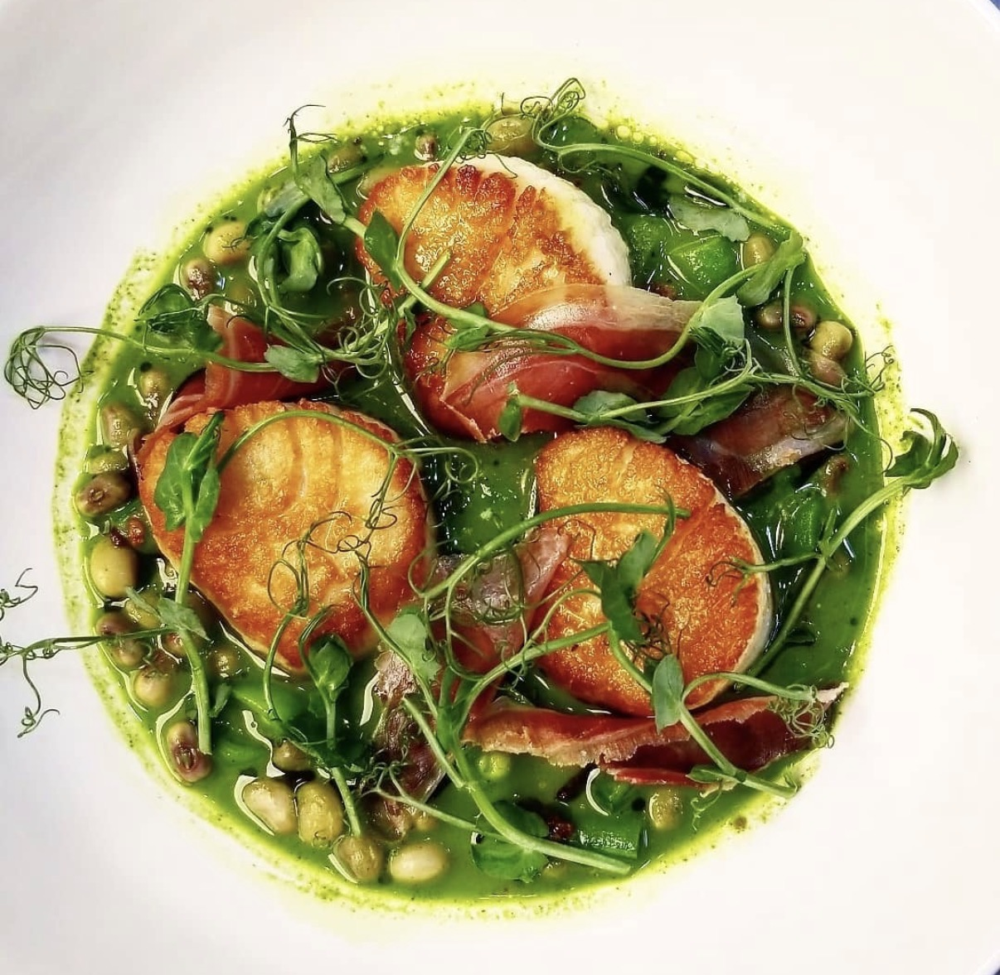

Classic Tiramisu
The greatest no-bake dessert in the world. Espresso-soaked ladyfingers layered with a cloud of mascarpone and egg cream, dusted with cocoa powder, and left to set overnight into something spectacular.
↓ Jump to Recipe
Authentic tiramisu has no raw egg whites (which is a common Italian-American variation) and no gelatin. It's made from egg yolks beaten with sugar until ribbon-like, folded with mascarpone, then lightened with whipped cream. The result is a cream that's rich but not heavy, intensely flavored but not cloying.
The most important thing about tiramisu: time. Make it the day before. The overnight rest allows the ladyfingers to fully absorb the espresso (creating a cohesive, sliceable dessert rather than soggy bread), the flavors to meld, and the cream to firm up. Day-of tiramisu is always inferior to day-after tiramisu.
Ingredients
- 6 large egg yolks
- 150g (¾ cup) granulated sugar
- 500g (17 oz) mascarpone cheese, room temperature
- 480ml (2 cups) heavy cream
- 2 cups strong espresso or very strong brewed coffee, cooled to room temperature
- 3 tbsp dry Marsala wine or dark rum
- 300g (10 oz) savoiardi (Italian ladyfinger cookies)
- 3–4 tbsp unsweetened cocoa powder, for dusting
Instructions
- Make the mascarpone cream. In a large bowl, whisk egg yolks and sugar together until very pale, thick, and ribbon-like, about 4–5 minutes of vigorous whisking (or 2 minutes with a hand mixer). Fold in mascarpone until smooth.
- Whip the cream. In a separate cold bowl, whip heavy cream to soft peaks — just holding their shape. Fold whipped cream into the mascarpone mixture in two additions until smooth, airy, and unified.
- Combine espresso and liqueur. Mix cooled espresso with Marsala or rum in a shallow bowl wide enough for dipping the ladyfingers.
- First layer. Working quickly, dip each ladyfinger in the espresso for exactly 2 seconds per side — they should absorb coffee without getting soggy. Arrange in a single layer in a 9x13 baking dish or individual serving glasses.
- First cream layer. Spread half the mascarpone cream evenly over the ladyfingers. Dust generously with cocoa powder using a fine sieve.
- Second layer. Dip remaining ladyfingers and arrange over the first cream layer. Spread remaining cream on top. Dust generously with cocoa.
- Refrigerate. Cover and refrigerate for at least 6 hours, ideally overnight. The tiramisu will firm up beautifully. Dust with more cocoa just before serving.
Chef's Pro Tips
- Overnight is mandatory, not optional — the texture and flavor improve dramatically after 12+ hours.
- The 2-second dip: too short = dry ladyfingers; too long = soggy, falling-apart mess. Two seconds per side is the sweet spot.
- Room temperature mascarpone incorporates more smoothly and is less likely to curdle when folded in.
- Use real espresso if possible. Regular drip coffee produces a flatter, less intense flavor.